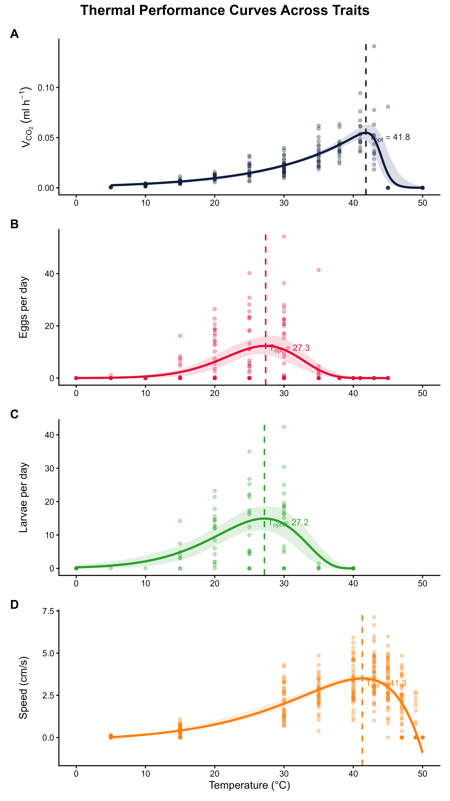

PhD Zoology Candidate – Stellenbosch University, South Africa

About Me
I am a PhD Zoology candidate with a research background in insect eco-physiology, spanning both applied pest management and fundamental thermal biology. My work focuses on how insects interact with their environment, with particular emphasis on physiological responses to temperature and their implications under climate change.
I have experience in experimental design, insect rearing, physiological assays, and statistical analysis in R, and I am engaged in science communication across academic and public audiences.
Current Research
My research focuses on how temperature shapes the performance and invasion success of the invasive harlequin ladybeetle (Harmonia axyridis). I combine laboratory experiments with long-term field microclimate data collected around Stellenbosch to understand how insects experience thermal environments in nature.
A key component of this work is comparing thermal performance across multiple traits and integrating laboratory-derived thermal performance curves with fine-scale microclimate data to estimate realised performance under natural conditions.
I also investigate physiological responses to thermal extremes, including damage accumulation, repair processes, and antioxidant protection during simulated heatwaves.

Future Research
In the next phase, I will finalise analyses and develop all chapters into publication-ready manuscripts, with a focus on integrating microclimate variation into thermal performance models.
More broadly, I aim to extend this framework to better understand how fine-scale thermal heterogeneity influences ectotherm performance and invasion success under climate change.
Ultimately, this work bridges laboratory-based thermal physiology and real-world environmental conditions to improve ecological prediction and invasion risk assessment.
Publications
-
Pogue, T., Malod, K., & Weldon, C. W. (2025).
Effects of semiochemical pre-feeding, physiological state, and weather on the response of Bactrocera dorsalis to methyl eugenol baited traps.
Crop Protection, 107015.
DOI -
Pogue, T., Malod, K., & Weldon, C. W. (2024).
Effects of physiological status and environmental factors on lure responses of three fruit fly species.
Journal of Chemical Ecology, 1–22.
DOI -
Pogue, T., Malod, K., & Weldon, C. W. (2022).
Patterns of remating behaviour in Ceratitis species.
Frontiers in Physiology, 824768.
DOI
Contact
Email: tpogue@sun.ac.za
Alternate: tania.pogue@gmail.com
Institution: Stellenbosch University
ORCID: 0000-0002-7645-7109
Google Scholar: View profile
Lab: Climate Lab